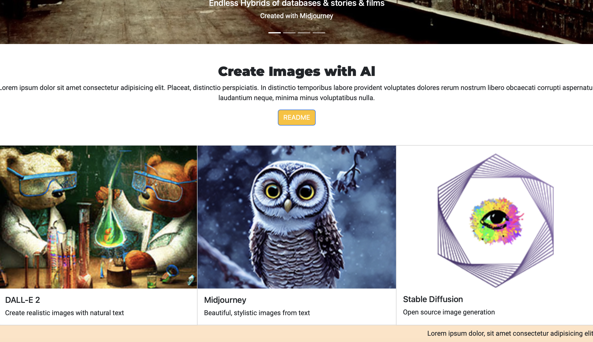
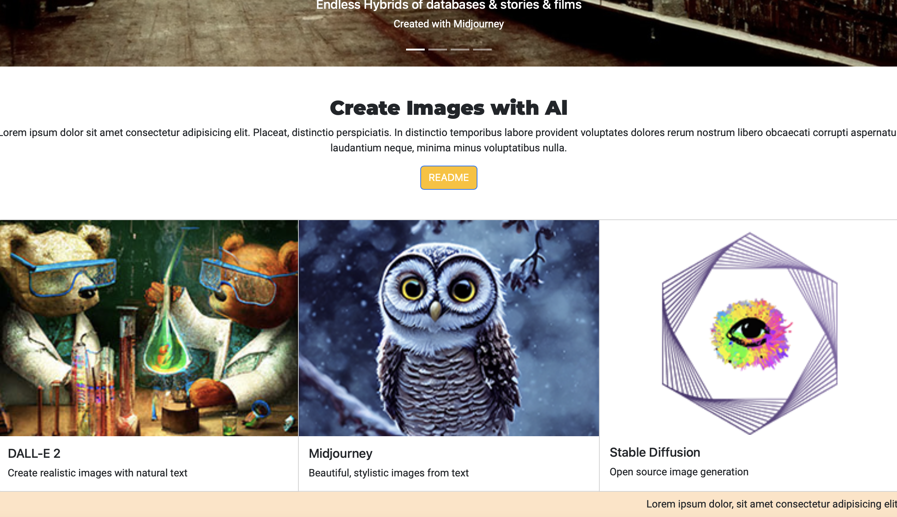

Hi! My name is Betsy Lambert, and I am a sophomore at Washington and Lee University. With minors in both Data Science and Mathematics, I have always been curious about the world around us and how and why things work the way they do. At W&L with a liberal arts education, I have been able to further develop my soft skills and strive to reach my full potential. Being from Alabama, I have a passion for the outdoors and living in Virginia has allowed me to futher those passions with the various rivers and mountains around Lexington.
This summer, I had the oppourtunity to work in Jackson, Wyoming where I was surrounded by the great outdoors. With access to the Grand Teton National Park, it was an incredible summer being able to further develop my passion for hiking and the outdoors. Being close the Blue Ridge Parkway in Virginia, it has been a rewarding experience to surround myself with people who also strive to get outside and discover the beauty of this world.
At W&L, I am involved in the Fancy Dress Commitee, as a member of the PR and Marketing Team, where I assist in planning one of W&L's most known annual traditions. I also serve alongside Habitat for Humanity, through the Generals Repairs Club, to benefit the greater Rockbridge County Area in home repair projects.
 
